37 experimental mechanics · 2–5 minute prototypes · progress saves in your browser
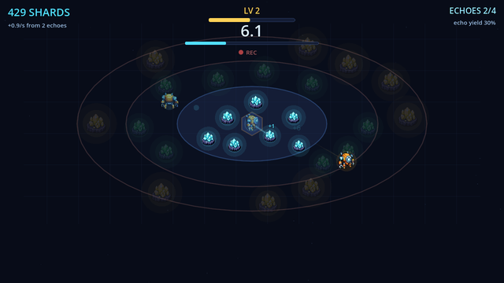
Every run you fly is recorded and replays forever as a ghost that keeps harvesting for you.
Hold or drag anywhere - the harvester follows your pointer. Tap buttons to start runs and buy upgrades. WASD optional on desktop.
▶ Play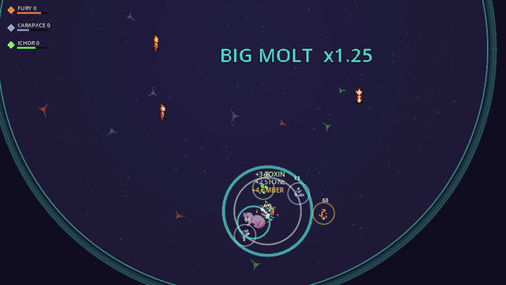
Damage crystallizes onto your body as armor — molt to bank your wounds as permanent power.
Drag anywhere to move. Tap the MOLT button to shed. Desktop: WASD/arrows + Space.
▶ Play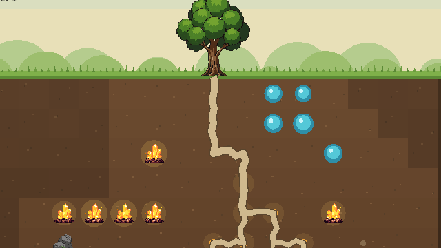
You are a stationary tree whose literal root network is your skill tree - grow it tile by tile through richer, deadlier soil strata.
Drag from a root to grow. Drag elsewhere to scroll. Tap a grub to squash it. GROW button opens upgrades.
▶ Play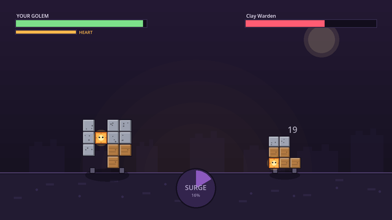
No currency, only matter: loot is polyomino pieces you bolt onto your golem's body grid, and the arrangement IS its stats.
Drag pieces to the body to attach, tap a tray piece to rotate, tap a placed piece to remove. Drag pieces to the flame to feed the Heart. In battle, tap SURGE when charged.
▶ Play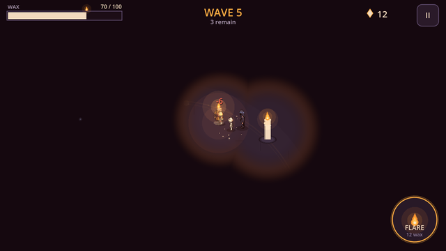
Your candle body is HP, light radius and action fuel in one - every move you make melts you.
Hold to walk toward your finger, quick-tap to slash (aim-assisted), FLARE button for a burning blast. Walk into dead candles to light beacons. Desktop: WASD + Space.
▶ Play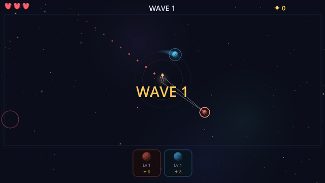
Your stats are moons in orbit — slingshot them at the void and feed them mass to grow your build.
Drag empty space to move. Drag a moon and release to slingshot. Tap a moon card to feed it mass.
▶ Play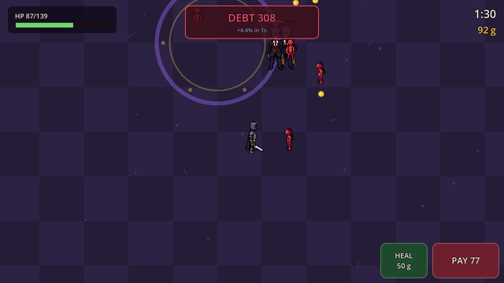
Borrow raw power from a demon bank — interest compounds live, and collector demons materialize sized to what you owe.
Hold or drag anywhere to move — the knight attacks by himself. Tap PAY to service the debt, HEAL to spend gold on your hide.
▶ Play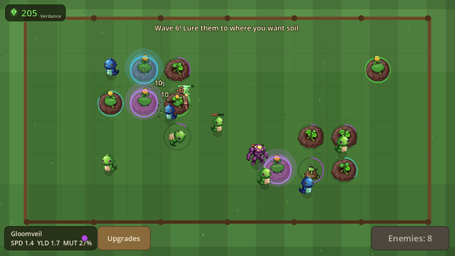
Everything you kill rots into farmland — kite monsters so they die exactly where you want your loot-garden to grow.
Hold anywhere to move — your knight swings on his own. Tap glowing ripe plants to harvest. Buttons: Call Wave, Strain Lab, Upgrades.
▶ Play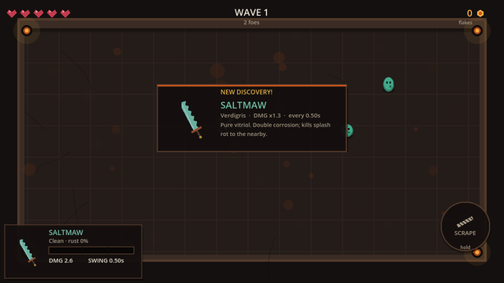
Every strike rusts your blade — scrape the rust off as currency, or let it hit 100% and shatter into a new weapon forged from whatever you bled it on.
Tap to dash-strike. Hold and drag to walk. Hold the SCRAPE button to harvest rust. (Desktop: WASD walk, Space scrape.)
▶ Play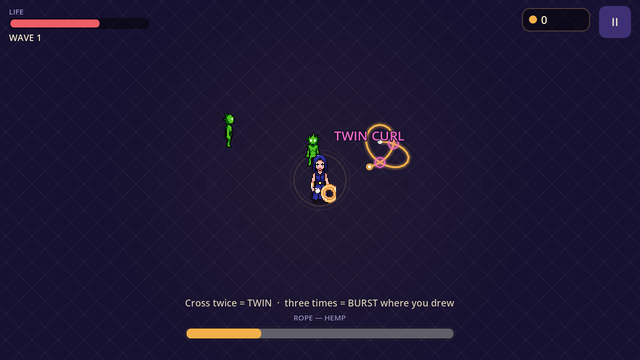
Draw a rope stroke — how many times it crosses itself IS the spell.
Drag anywhere to draw, release to cast. Everything else is tap.
▶ Play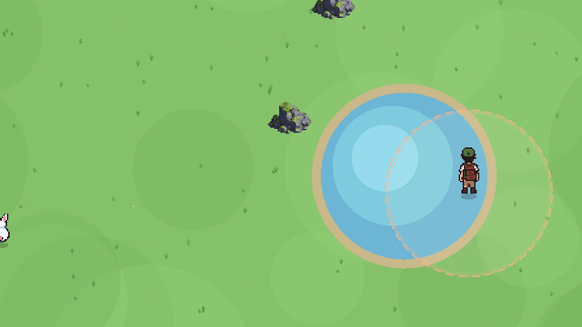
Level up by counting, not killing: observe creature behaviors to fill census pages, and completed pages become summonable allies.
Hold or drag anywhere to walk (slow is stealthy). Tap the big buttons to summon allies or drop a lure; tap CENSUS for your field book.
▶ Play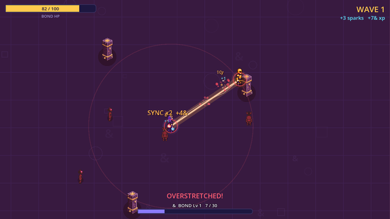
Two heroes fused by a living tether: stretch it into a cutting beam, then snap them together to crush whatever is caught between.
Drag a hero to stretch and sweep the beam. Release to snap. Drag open ground to move the pair. WASD also moves.
▶ Play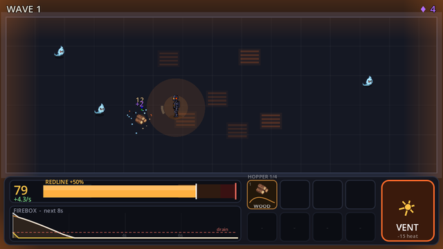
HP is fuel: everything you do burns heat, and every fuel you loot burns on its own curve.
Drag to move. Tap fuel chips to feed the furnace. Tap VENT to blast excess heat.
▶ Play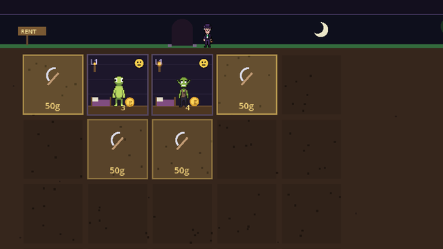
You OWN the dungeon and rent its rooms to monsters — the only combat is the eviction fight.
Tap rooms to inspect, dig, furnish and collect rent. Tap an applicant, then a green room, to move them in. Evictions: tap the rebel to strike, tap SHIELD to block their shockwave.
▶ Play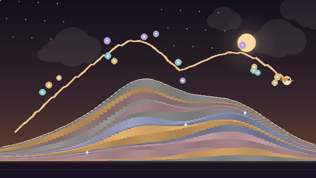
Every flight you take is pressed into the mountain as a permanent stratum of rock — then you dig back down through your own history for fossilized loot.
Fly: hold anywhere to rise, release to dive. Dig: tap the rock to excavate, drag to pan. Everything else is buttons.
▶ Play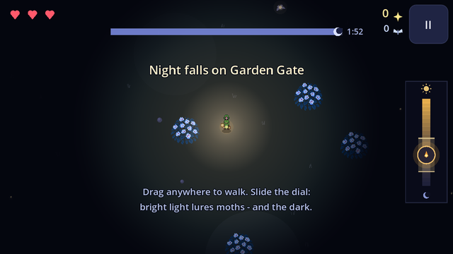
Your lantern's brightness dial is loot-magnet, moth-bait and monster-bait all at once.
Drag anywhere to walk. Slide the right-edge dial to set brightness (band ticks show what nearby moths want). Tap II to pause. Desktop: WASD moves, Q/E or mouse wheel dims/brightens.
▶ Play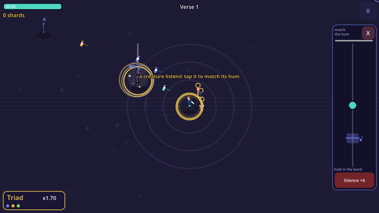
Spare weakened foes by matching their hum's pitch, and they join the choir whose harmony is your firepower.
Drag to move. Tap a glowing listener, then drag the pitch slider into the band and hold. Silence button kills for bonus shards.
▶ Play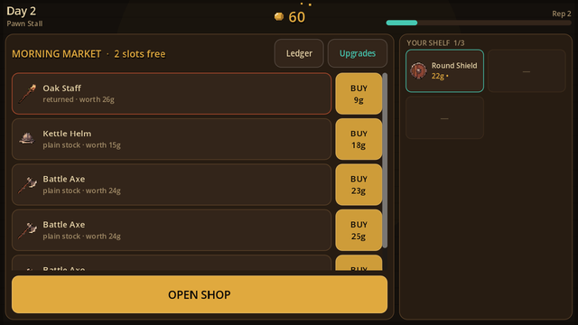
A time-loop pawnshop where gear appreciates through other people's deaths.
Everything by tap: BUY, SELL, HAGGLE or PASS. Tap any item to read its story; fuse two stories at the Fusion Bench.
▶ Play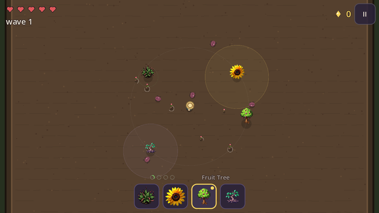
Your whip is weapon and seed drill — every crack plants your build straight into the arena.
Drag to move. Tap to crack the whip (it plants the selected seed). Tap the bottom buttons to switch seeds. WASD optional on desktop.
▶ Play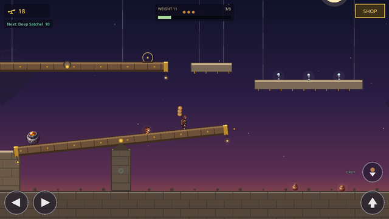
The world is a giant balance scale — every relic you carry has real weight that tilts the terrain under your feet.
On-screen arrows to walk, up to jump, DROP to leave loot as a counterweight. Walk into the shrine to bank. Keyboard: A/D or arrows, Space jump, S/Q drop, E shop.
▶ Play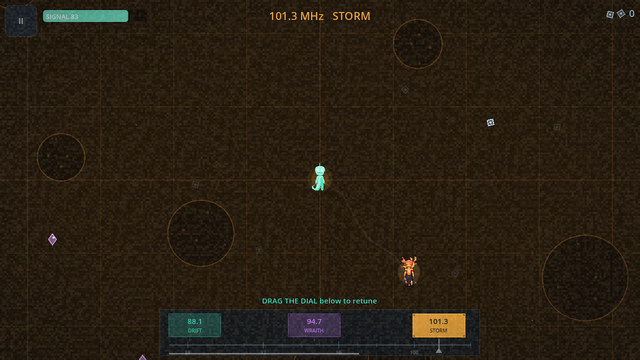
You are a radio ghost: drag a tuner dial to phase between three overlapping frequency-worlds of the same map.
Drag anywhere to drift. Drag the tuner dial or tap a band chip to retune. Desktop: WASD move, 1/2/3 retune.
▶ Play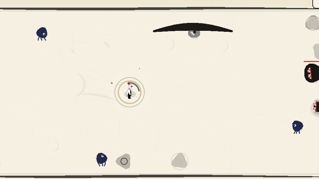
Calligraphy combat where your ink only refills while you stand perfectly still.
Drag anywhere to paint a stroke (flat = Sweep, down = Cleave, up = Gale, circle = Guard, zigzag = Storm). Tap to glide there. Stand still to breathe ink back. WASD optional on desktop.
▶ Play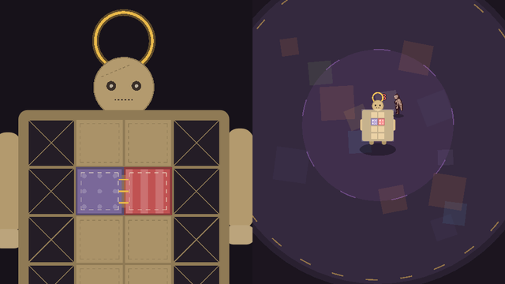
Your armor is a quilt of the dead's memories - where you sew each patch decides which gifts synergize and which curses stay sealed.
Tap a patch, then tap a cell to sew. In battle: tap the field to throw needles, tap PATCH SURGE for a synergy-powered blast.
▶ Play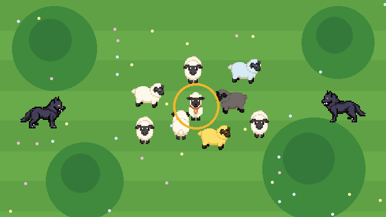
You are the lead sheep: your flock is your health, ammo and army all at once.
Hold and drag to lead the flock. Tap the three big buttons to spend sheep on spells. WASD + 1/2/3 on desktop.
▶ Play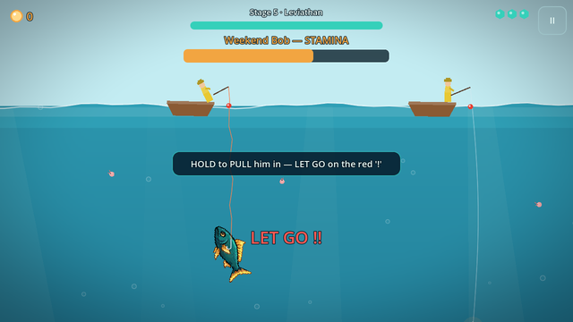
Inverted fishing: you are the fish, and the endgame is biting the hook on purpose to drag the fisherman into the water.
Hold anywhere to swim toward your finger. Tap fast to thrash off a hook. Hold to pull in the tug-of-war and let go on the red heave. Tap BITE THE HOOK when it appears.
▶ Play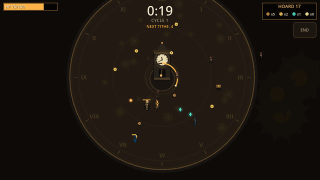
Every 60 seconds the Great Clock demands a tithe: pay with hoarded loot, a pillar of your strength, or your own blood — or refuse, and time freezes while your foes grow terrible until you pay double.
Drag anywhere to move — your knight fires on his own. Tap the big choices when the clock strikes. WASD works on desktop.
▶ Play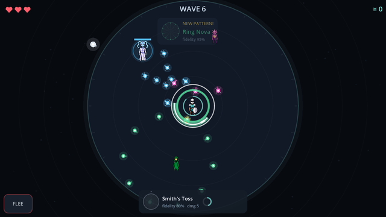
Block an attack with your mirror to record its exact bullet pattern as real data, then forge it into a weapon that replays the pattern as your own.
Hold anywhere to raise the mirror, drag to sweep it toward the incoming shots, release to drop it. Tap buttons for the forge and upgrades. Spacebar auto-aims the mirror on desktop.
▶ Play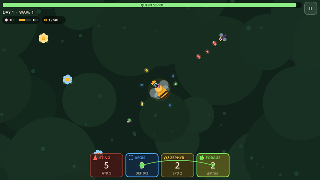
Every bee in your swarm IS one stat point, and you drag them between hives mid-fight to rewrite your stat sheet while raiders are biting.
Tap or drag anywhere on the meadow to fly the queen. Drag from one hive cell to another (or tap A then tap B) to stream a third of that hive across. Tap II to pause or retreat.
▶ Play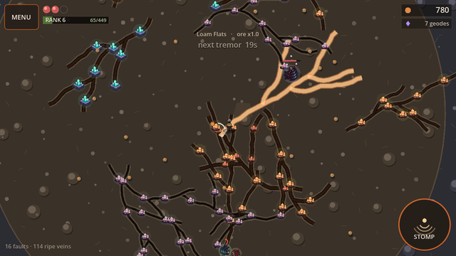
Charged seismic stomps tear permanent branching cracks through the plateau, and those cracks slowly mineralise into ore veins you mine forever after.
Drag anywhere to walk. Hold the STOMP pad to charge, drag off it to aim, release to slam; a quick tap makes a radial mini-fault. Stand near a ripe vein to auto-mine. Desktop: WASD/arrows to move, hold Space to charge and aim with the mouse.
▶ Play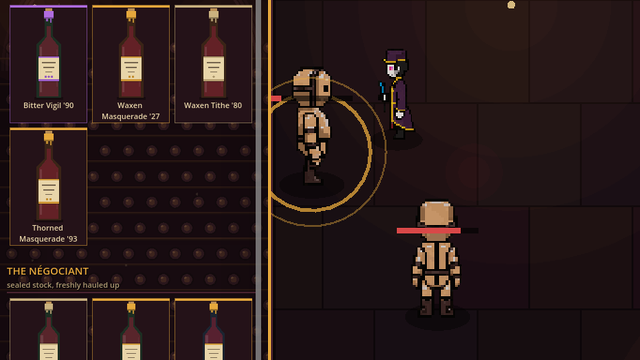
Drink a cursed vintage and the debuff hits instantly — but win enough battles while it ages in your blood and it matures into a permanent blessing.
Tap an enemy to charge and strike it. Tap or drag the floor to move. Everything else is buttons.
▶ Play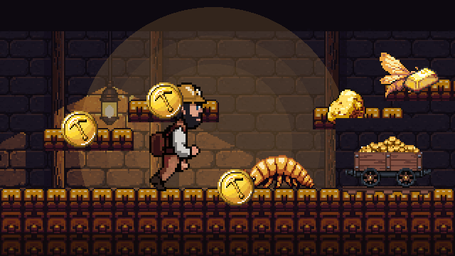
Every coin you grab has real mass — your jump arc visibly flattens as you get greedy, so hauling treasure out of the mine is the real boss fight.
Arrows/stick or on-screen pad to move, A/Space/W to jump (release to cut). B/K drops your heaviest item. Walk into the cart to bank, X/J opens the shop.
▶ Play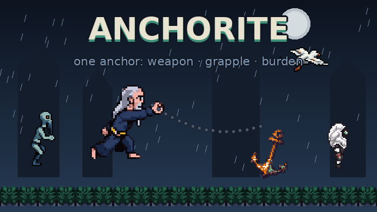
A hermit chained to a huge anchor: one object is your only weapon, your grapple, and your burden.
Drag to aim, release to hurl. Buttons: move, jump, HURL/REEL, SLAM/YANK. Keyboard A/D + Space + J/K. Gamepad supported.
▶ Play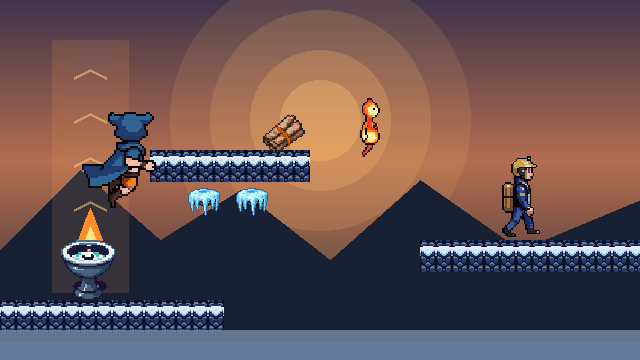
Light braziers to raise thermal columns that lift your glider cloak — and fling fire-dousing enemies into the icicles.
Touch: arrows to move, hold WING to jump/glide, FLAME to light or gust, DIVE to drop. Keys: A/D + Space, J act, K dive. Pad: stick + (A) jump/glide, (X) act, (B) dive.
▶ Play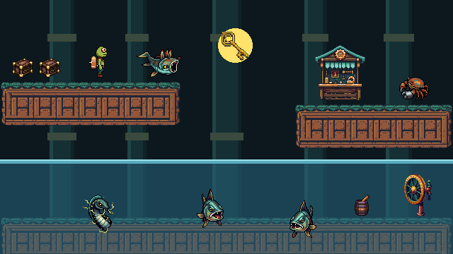
The whole waterworks is one connected tub — and you own the global waterline, pumping it up and down in real time.
Arrow buttons move, big button jumps (jump again in water to stroke). Wave-arrow buttons flood/drain the works. Down button dives. Keyboard: A/D move, Space jump, J flood, K drain. Gamepad supported.
▶ Play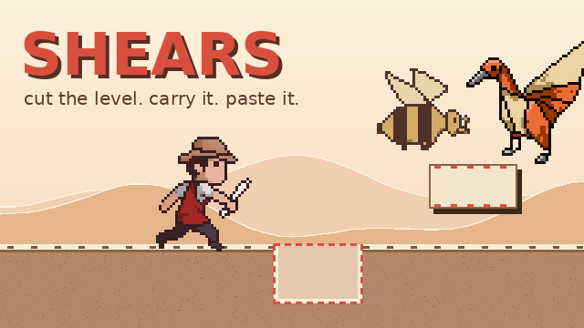
Giant tailor's shears: cut a piece out of the paper world, carry it folded on your back, paste it anywhere as new ground.
Drag on the paper to cut, tap to paste, on-screen arrows + jump. Keyboard: WASD/Space, J snip, K rotate. Gamepad: A jump, X snip/paste, B rotate.
▶ Play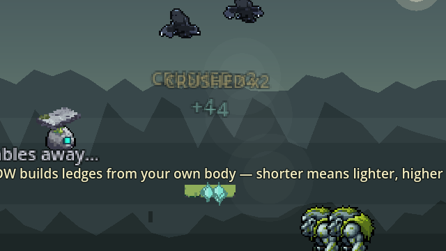
You ARE a walking stack of stones — throw pieces of yourself that crush enemies and land as platforms, then walk over them to restack.
Left/right + Jump. THROW hurls your top stone; SLAM whips the whole tower. Stand on a stone a moment to gather it. Full gamepad support.
▶ Play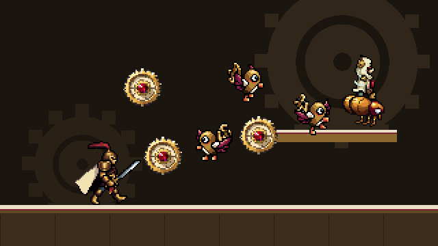
Your jump is the only thing that arms your blade — and a kill is the only thing that re-winds your jump.
Walk with the arrow buttons, BOOT button jumps, BLADE button strikes (it snaps to nearby prey). Keyboard: A/D + Space + J (K dash). Xbox pad supported.
▶ Play